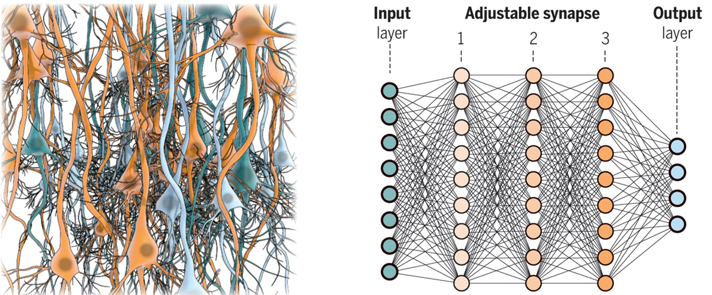
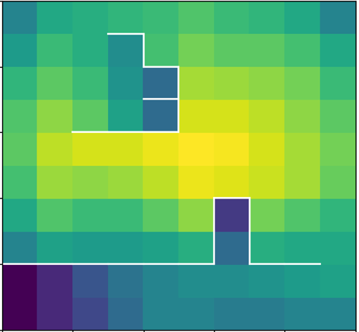
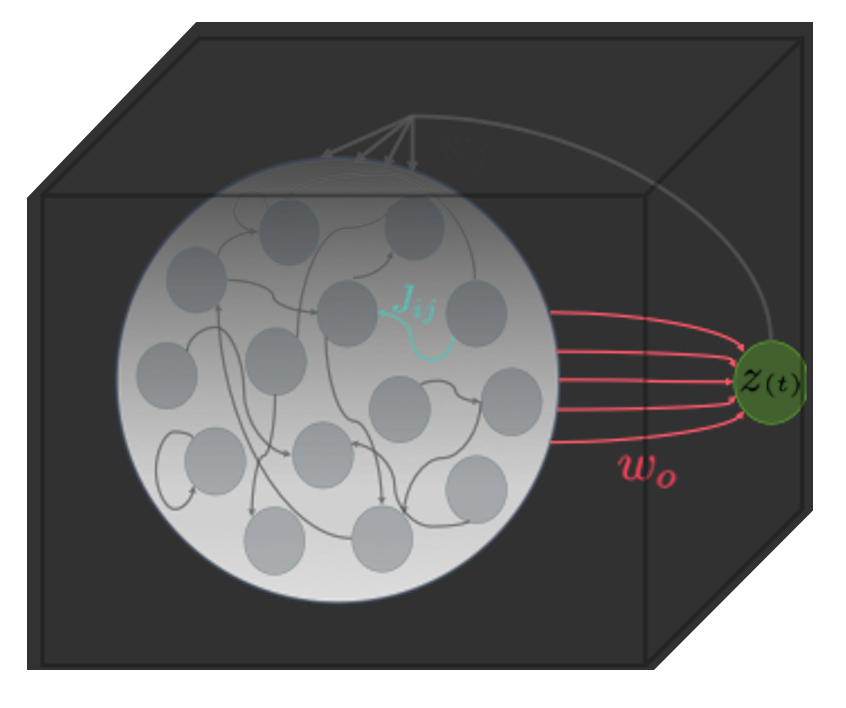

 Discovery of useful representations is one of the core objectives of deep learning. Why? Because in most real world applications, we don't have labeled data to train models via supervised learning. And in reinforcement learning, agents should learn to perform a task in an environment that reward is sparsly-distributed.
" Basically it’s the idea of learning to represent the world before learning a task — and this is what babies do." Yann LeCun
But what kind of representations should we learn? What is a "good" representation? Should we learn the representation once and freeze it or
should it be adaptable?
To answer these questions, one possible strategy is to look into the nature of representations
in biological systems such as neuronal networks and neurons.
Mutual information maximization is a well established method in theoretical studies of neural coding; in this project, I used mutual information maximization paradigm to find optimal representation of the states of an environment. The figure on left shows a maze and
value of maximal mutual information between actions of an agent and its final states. At the center of maze, where there are more future states, the value of maximal mutual information is high as compared
to the states that are close to the walls or corners. So the more the maximal mutual information is, the more "prepared" an agent is to perform future tasks!
But calculating mutual information between high dimensional and continuous input/output is notoriously hard. In this project, first, I decreased the computational complexity of
mutual information estimation by combining ideas from deep learning and control theory. Second, I developed a new way to parametrize the state representations
so that they are adaptable and optimal in the sense of maximizing the information processing capacity of the environment.
2. What are the dynamical mechanisms underlying working memory in recurrent neural networks?
 Now that you are reading this sentence and keeping each word in your
mind for a short period of time, you are using your working memory! It is an essential component of our cognitive functions such as problem solving, reasoning
and planning. But what are the dynamical mechanism underlying working memory? How can we model neuronal circuits to study such mechanism?
Is it possible to replicate the same mechanism that neuronal circuits use for maintaining information in AI algorithms?
To address these challenging questions, in this project, I model neuronal circuits using Recurrent Neural Networks (RNNs). Then train RNN to learn cognitive tasks
such as sequential pattern matching, then reverse engineer the network to understand "how" RNN learns the task.